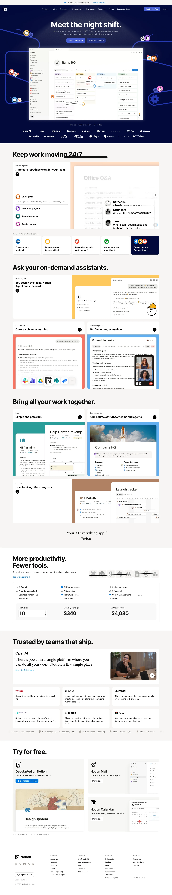

Notion 主题
Notion 的 Design.md 主题展示，围绕媒体内容、暖色调、SaaS 产品、开发工具组织页面。
All-in-one workspace. Warm minimalism, serif headings, soft surfaces.
媒体内容暖色调SaaS 产品开发工具浅色界面B2B 产品效率工具专业工具

来源
- 来源
- getdesign.md
- 镜像
- github:VoltAgent/awesome-design-md
- 网站
- https://notion.so/
- 详情
- https://getdesign.md/notion/design-md
色板
#5645d4: #5645d4#3a2a99: #3a2a99#0075de: #0075de#4534b3: #4534b3#ffffff: #ffffff#0a1530: #0a1530#070f24: #070f24#1a2a52: #1a2a52#005bab: #005bab#dd5b00: #dd5b00#793400: #793400#ff64c8: #ff64c8
字体
display: Notion Sansbody: Notion Sansmono: ui-monospacehints: Notion Sans,ui-monospace,Inter
圆角
control: 8pxcard: 12pxpreview: 16pxpill: 9999pxsource: design-md
间距
xxs: 4pxxs: 8pxsm: 12pxmd: 16pxlg: 20pxxl: 24pxxxl: 32pxxxxl: 40pxsection-sm: 48pxsection: 64pxsection-lg: 96pxhero: 120pxsource: design-md
使用建议
建议
- 建议：Use {colors.primary} (purple) as the dominant CTA across all surfaces — it's the brand's recognizable signal。
- 建议：Pair deep navy hero bands ({colors.brand-navy}) with the purple button + decorative sticky-note dots。
- 建议：Use pastel feature card tints (peach, rose, mint, lavender, sky, yellow) generously。
- 建议：Use {colors.card-tint-yellow-bold} for high-emphasis "Ask the assistant"-style banner cards。
- 建议：Apply {rounded.md} (8px) to buttons consistently — Notion uses rectangles, not pills。
避免
- 避免：use the purple for body text or large background surfaces。
- 避免：use pill-shaped buttons; Notion's geometry is rectangular-sober。
- 避免：mix link-blue ({colors.link-blue}) with primary-purple ({colors.primary}) — they have distinct roles。
- 避免：apply heavy shadows on flat documentation cards。
- 避免：replace Notion-Sans with a generic Inter。
查看 DESIGN.md